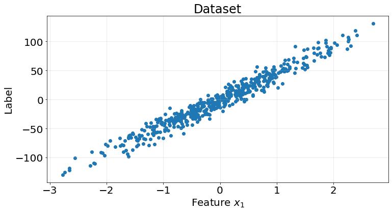
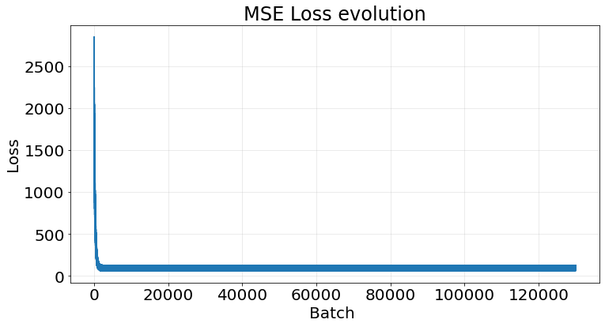

import numpy as np
import matplotlib.pyplot as plt
from sklearn.datasets import make_regression
from sklearn.model_selection import KFold
from sklearn.metrics import r2_score
from sklearn.base import RegressorMixinPersonal notes for myself about linear regression and how to implement it from scratch using least squares and gradient descent.
1. Introduction
Linear regression models the relationship between a dependent variable and one or more independent variables using a linear approach. The dependent variable is constructed as a linear combination of the indepent variables plus some noise. In matrix form, linear regression is expressed as
\[ Y = X \cdot B + \epsilon, \]
where \(Y\) is a vector of size \((n, 1)\), \(X\) is a matrix of size \((n, p+1)\) representing the independent variables, \(B\) is a vector of size \((p+1, 1)\) representing the coefficients that weight the features, \(\epsilon\) is a vector of size \((n, 1)\) and \(n\) and \(p\) are the number of samples and features respectively.
1.1. Least squares solution
How do we optimize the coefficients? We can find the vector of \(B\) that minimizes the residuals between the prediction and the true value. We have a function \(S\) to minimize that depends on the parameters \(B\)
\[ S(B) = \sum_j \epsilon_{j}^2 = (Y - X \cdot B)^{T} \cdot (Y - X \cdot B). \]
Since \(S(B)\) is a quadratic function its minimum exists albeit is not unique. Let’s expand the above expression
\[ S(B) = Y^T Y - Y^T X B - B^T X^T Y + B^T X^T X B. \]
We now differentiate \(S\) with respect to \(B\)
\[ \dfrac{ d S(B) }{ dB } = 0 -2 X^T Y + 2 X^T X B. \]
To find the minum, we do \(\dfrac{d S(B)}{B}=0\)
\[ -2 X^T Y + 2 X^T X B = 0 \rightarrow X^T X B = X^T Y, \]
and then we solve for \(B\)
\[ B = (X^T X)^{-1} X^T Y. \]
1.1. Gradient descent
Another way of findinf the parameters for the linear regression model is to ask the following question “how does the error change when the parameters changes?”. The answer to this question provides a path that we can follow iteratively to reach the minimum error.
We quantify the change in the error with respect to the parameters we use the derivative. Let’s say we want to use the mean squared error (MSE) as a loss function \(L\) to measure how accurate the estimated predictions \(\hat{Y}\) are with respect to the real values \(Y\):
\[ L(B) = \dfrac{1}{N} || Y - \hat{Y}||^{2} = \dfrac{1}{N} \left( Y - \hat{Y} \right)^{T}\left( Y - \hat{Y} \right). \]
Here, the MSE is the norm 2 of the differences between the estimated values and the real values.
We now take the derivative of the loss function with respect to \(B\). Refer to the previous section for a more complete proof.
\[ \dfrac{ d S(B) }{ dB } = \dfrac{1}{N} \left( 0 -2 X^T Y + 2 X^T X B \right) = \dfrac{-2}{N} X^T \left( Y - XB \right). \]
Having computed how much the error changes depending on the variation of the parameters \(B\) we now use this information to update \(B\) such that
\[ B = B - \eta \dfrac{d L(B)}{d B}, \]
where \(\eta\) is the learning rate, a parameter used to control how small or big the new changes are.
The above operation is repeated for a fixed number of times called epochs. Each epoch represents a full traverse of the data \(X\). We can traverse the data in 3 ways:
- Batch: we use all elements of \(X\) at once.
- Mini-batch:: we use a subset \(V\) of elements of \(X\) such that \((1 < n_V < n_X)\), where \(n\) represents the number of rows
- Stochastic:: we use a subset \(V\) of elements of \(X\) such that \((n_V = 1)\)
2. Code linear regression from scratch
Below we find the code for both approaches: the ordinary least squares and the gradient descent method. The code is a direct translation
class OLSLinearRegression(RegressorMixin):
"""Ordinary least squares regression.
Parameters
----------
fit_intercept : bool, optional, default: True
True to fit the intercept of the linear regression.
"""
def __init__(self, fit_intercept=True):
self.fit_intercept = fit_intercept
self.coefficients_ = None
def fit(self, X, y):
if X.ndim != 2:
raise ValueError("Number of dims in features matrix must be 2")
fit_intercept = self.fit_intercept
if fit_intercept:
n_features = len(X)
ones_col = np.ones((n_features, 1))
X = np.hstack((ones_col, X))
coeff = np.linalg.solve(np.dot(X.T, X), np.dot(X.T, y))
#coeff = np.linalg.inv(X.T @ X) @ X.T @ y
self.coefficients_ = coeff
def predict(self, X):
fit_intercept = self.fit_intercept
coeff = self.coefficients_
if fit_intercept:
return X @ coeff[1:] + coeff[0]
else:
return X @ coeffclass GDLinearRegression(RegressorMixin):
"""Gradient descent linear regression.
Estimates the parameters using a gradient descent optimization
approach.
Parameters
----------
l_rate : float, optional, default: 1e-3
Learning rate.
batch_size : int, optional, default: 1
Batch size for the gradient descent algorithm. 1 will perform
a stochastic gradient descent.
"""
def __init__(
self,
l_rate=1e-3,
batch_size=1,
fit_intercept=True,
n_epochs=1_000
):
self.l_rate = l_rate
self.batch_size = batch_size
self.fit_intercept = fit_intercept
self.n_epochs = n_epochs
# attributes
self.coefficients_ = None
self.loss = []
def _mse_loss(self, y_true, y_est):
return ((y_true - y_est) ** 2).mean()
def fit(self, X, y):
n_samples, n_features = X.shape
n_epochs = self.n_epochs
fit_intercept = self.fit_intercept
l_rate = self.l_rate
batch_size = self.batch_size
if fit_intercept:
X = np.hstack((np.ones((n_samples, 1)), X))
coefficients_ = np.zeros(X.shape[1])
for _ in range(n_epochs):
for i in range(0, n_samples, batch_size):
X_batch = X[i:i + batch_size]
y_batch = y[i:i + batch_size]
# make prediction
prediction = X_batch @ coefficients_
# compute loss
_loss = self._mse_loss(y_batch, prediction)
self.loss.append(_loss)
# compute gradient
gradient = -(2 / batch_size) * X_batch.T @ (y_batch - prediction)
# update parameters
coefficients_ -= l_rate * gradient
self.coefficients_ = coefficients_
def predict(self, X):
if self.fit_intercept:
X = np.hstack((np.ones((X.shape[0], 1)), X))
return X @ self.coefficients_2.1. OLS example
We use the ordinary least squares solution on the following dataset
X, y = make_regression(n_samples=500, n_features=1, n_informative=1, n_targets=1, noise=10, random_state=0)
fig, ax = plt.subplots(1, 1, figsize=(12, 6))
ax.scatter(X, y)
ax.grid(True, alpha=.3)
ax.set_title("Dataset", fontsize=24)
ax.set_xlabel("Feature $x_{1}$", fontsize=20)
ax.set_ylabel("Label", fontsize=20)
ax.tick_params(labelsize=20)
kf = KFold(n_splits=5)
r2_scores = []
for train_idx, test_idx in kf.split(X):
model = OLSLinearRegression()
X_train = X[train_idx]
y_train = y[train_idx]
X_test = X[test_idx]
y_test = y[test_idx]
model.fit(X_train, y_train)
y_pred = model.predict(X_test)
score = r2_score(y_true=y_test, y_pred=y_pred)
r2_scores.append(score)Pretty good results from this naive model on the synthetic dataset
np.array(r2_scores).mean()0.95342449932055332.2. Gradient descent example
We perform the very same thing using the gradient descent solution
kf = KFold(n_splits=5)
r2_scores = []
for train_idx, test_idx in kf.split(X):
model = GDLinearRegression(batch_size=32, n_epochs=10_000)
X_train = X[train_idx]
y_train = y[train_idx]
X_test = X[test_idx]
y_test = y[test_idx]
model.fit(X_train, y_train)
y_pred = model.predict(X_test)
score = r2_score(y_true=y_test, y_pred=y_pred)
r2_scores.append(score)It takes a bit longer due to the iterative nature of the algorithm but we achieve the same results.
np.array(r2_scores).mean()0.9534223387121132If we take the last model and plot its loss we observe a clear decrease the more batches we perform:
fig, ax = plt.subplots(1, 1, figsize=(12, 6))
ax.plot(model.loss)
ax.grid(True, alpha=.3)
ax.set_title("MSE Loss evolution", fontsize=24)
ax.set_xlabel("Batch ", fontsize=20)
ax.set_ylabel("Loss", fontsize=20)
ax.tick_params(labelsize=20)
3. Strengths and Weaknesses
A summary of strenghts and weaknesses of this model.
Pros
- Simple and escalable.
- Interpretable.
- Efficient for large datasets with linear relationships.
Cons
- Assumes linear relationships.
- Sensitive to outliers.
- Limited at handling complex relationships